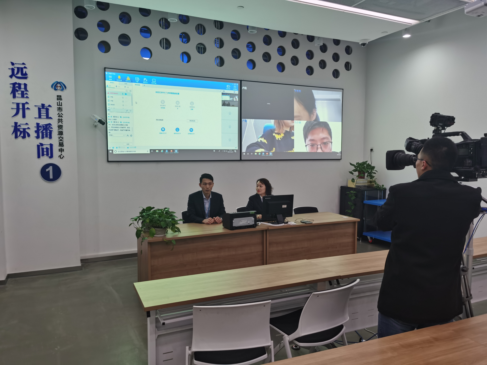

【信息发布时间：2019-12-26阅读次数：】 【我要打印】 【关闭】
12月23日，昆山公共资源交易中心首次采用手机远程开标的方式，顺利完成昆山市第一人民医院麻醉机采购项目，此次项目同时也是全国县级市第一例采用手机远程开标完成的采购项目。来自上海、无锡、合肥3家竞标单位通过“昆易采”手机APP参与项目开标，从签到、解密、报价到完成开标，全程仅用时不到半个小时。评标结束后，我市第一张电子中标通知书发送到中标人（无锡中领迈康科技发展有限公司）手机上。

一直以来，昆山公共资源交易总量大，金额高，竞标企业多，1至11月，完成进场交易1769项，交易总额超过300亿元,平均每天交易额超过1亿元。
为进一步优化全市营商环境，昆山公共资源交易中心实施“移动优先”战略，于2019年研发上线“昆易采”APP，创新推出手机远程开标服务，将传统实体开标场所搬到移动手机端，投标人（供应商）只需登录“昆易采”APP，即可进行开标相关操作，开标场景实现全程可视化，为竞标单位节约了大量人力、交通和时间成本。
下阶段，昆山公共资源交易中心将以企业需求为导向，持续社会化手机端远程不见面开标工作，探索在“昆易采”手机APP延伸保证金管理、电子商城等新服务内容，不断改进证照权限设置、扫码便利性，探索电子营业执照的应用新模式，为广大投标人提供更加高效、便利的一体式服务。